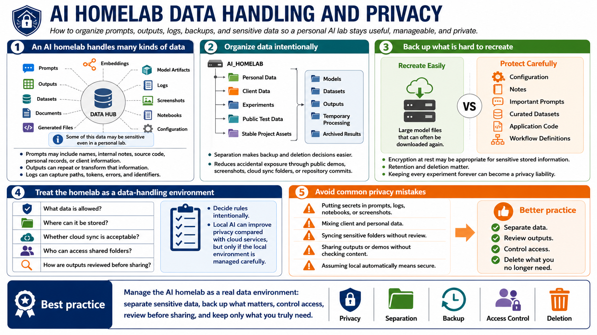

Data, Storage, and Privacy
Connecting to LMS... Progress: in progress

Narration
An AI homelab produces and consumes many kinds of data: prompts, outputs, datasets, documents, generated files, embeddings, model artifacts, logs, screenshots, notebooks, and configuration. Some of that data may be sensitive even if the lab is personal. Prompts can include names, internal notes, source code, personal records, or client information. Outputs can repeat or transform that information. Logs can capture paths, tokens, errors, and identifiers.
Organize data intentionally. Separate personal data, client data, experiments, public test data, and stable project assets. Use clear folders for models, datasets, outputs, temporary processing, and archived results. This makes backup and deletion decisions easier. It also reduces the chance that a public demo, shared screenshot, cloud sync folder, or repository commit accidentally includes information that should have stayed private.
Backups should focus on the assets that are hard to recreate: configuration, notes, prompts you need to preserve, curated datasets, application code, and workflow definitions. Large model files can often be downloaded again, while carefully prepared datasets or notebooks may be unique. Encryption at rest may be appropriate when sensitive information is stored. Retention and deletion matter too. Keeping every experiment forever can turn a learning lab into a growing privacy liability.
Treat the homelab as a data-handling environment. Decide what data is allowed, where it can be stored, whether cloud sync is acceptable, who can access shared folders, and how outputs are reviewed before sharing. Avoid putting secrets in prompts, logs, notebooks, or screenshots. Local AI can improve privacy compared with sending everything to a cloud service, but only if the local environment is managed carefully.